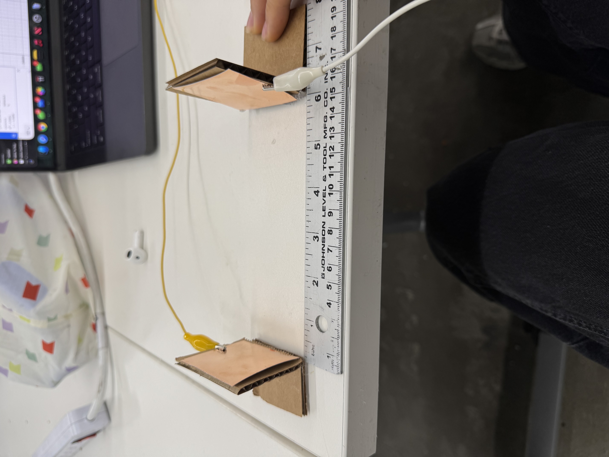
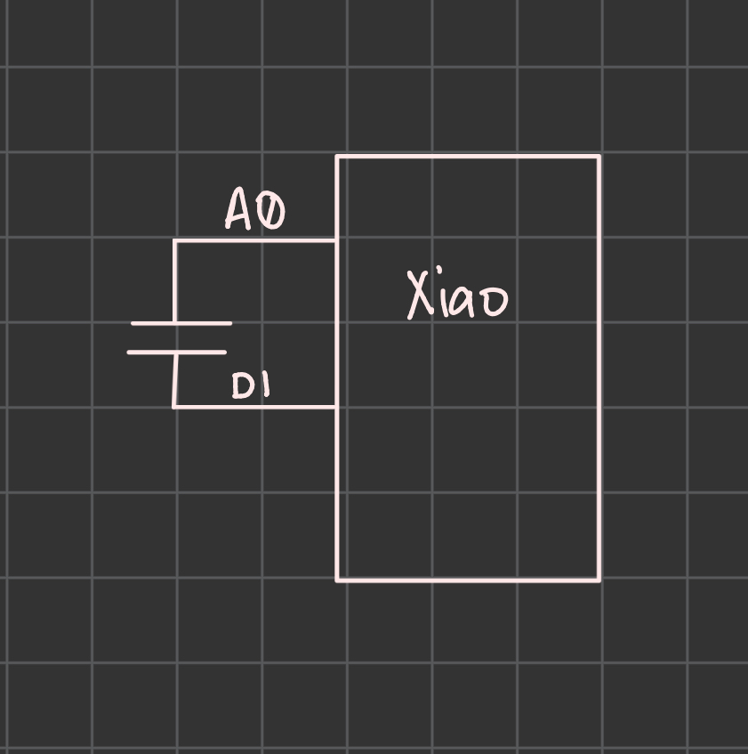
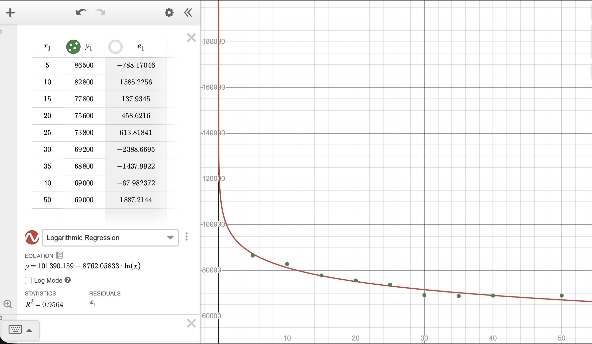
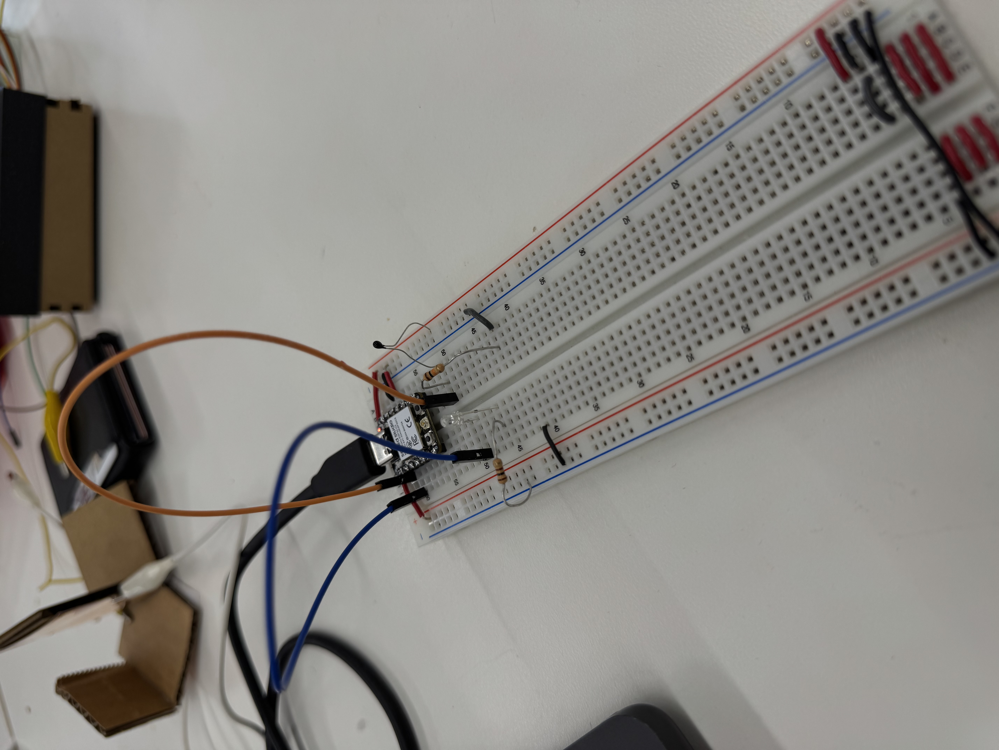
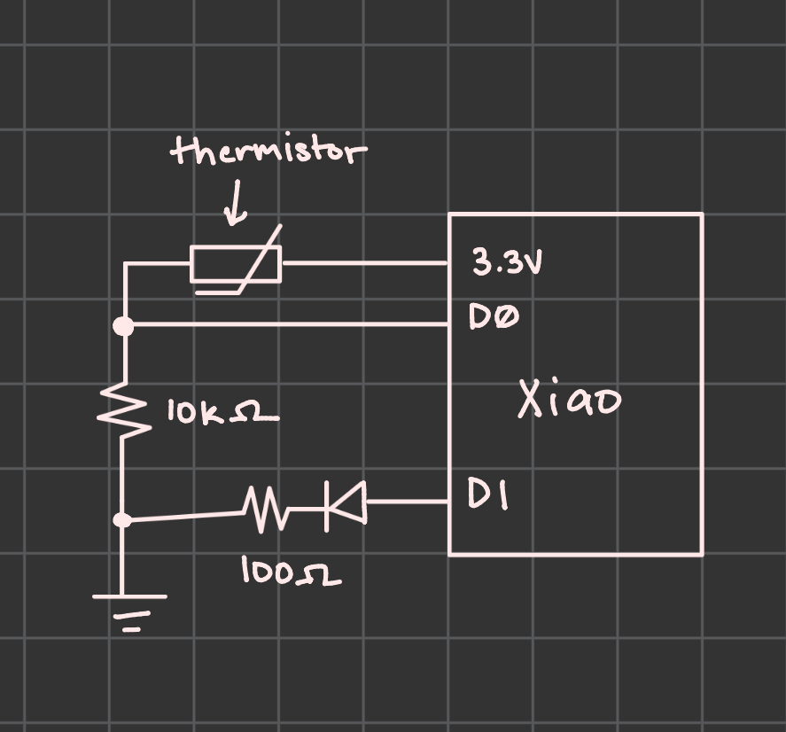
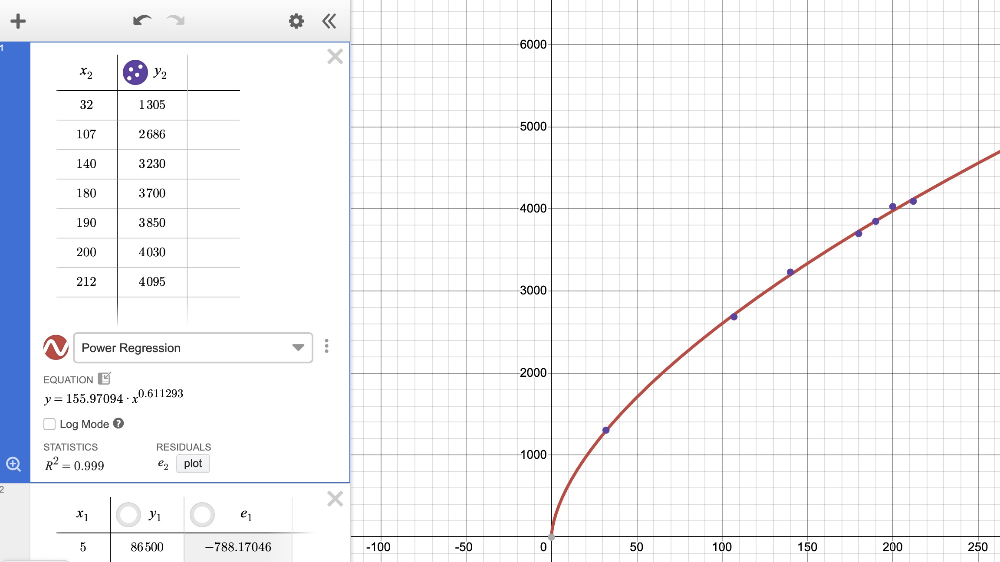
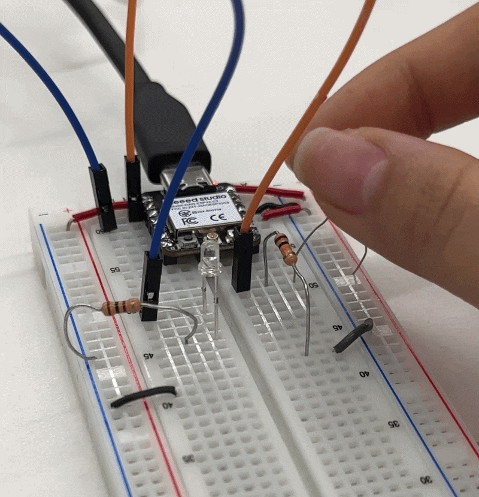

Capacitive Sensor
For my capacitive sensor, I decided to measure distance. I ended up making two small stands that I clipped the plates to, with one stationary and the other moving along a meter stick. To calibrate it, I started from zero centimeters and moved up in 5 centimeter increments until the reading no longer decreased. Plotting on a graph, we can see that the relationship between real distance and measured reading follows a logarithmic line, levelling off around 40 centimeters. This is probably due to the decrease in precision and accuracy as we move the plates farther away, with 40 centimeters being the farthest we can get meaningful readings.



As for the coding portion, I mostly just adapted the arduino code we were given in class, changing it to add class structure and remove delay.
class CapacitanceSensor {
int analogPin;
int txPin;
public:
CapacitanceSensor(int inputAnalogPin, int inputTxPin) {
analogPin = inputAnalogPin;
txPin = inputTxPin;
}
void begin() {
pinMode(txPin, OUTPUT);
digitalWrite(txPin, LOW);
}
int readHigh() {
digitalWrite(txPin, HIGH);
return analogRead(analogPin);
}
int readLow() {
digitalWrite(txPin, LOW);
return analogRead(analogPin);
}
};
CapacitanceSensor mySensor(A0, D1);
unsigned long lastStep = 0;
const unsigned long interval = 100; // microseconds
int state = 0; // 0 = measure HIGH, 1 = measure LOW + add sample
int readHighValue = 0;
int readLowValue = 0;
long sum = 0;
int sampleCount = 0;
const int totalSamples = 100;
void setup() {
Serial.begin(9600);
mySensor.begin();
}
void loop() {
unsigned long now = micros();
if (now - lastStep >= interval) {
lastStep = now;
if (state == 0) {
readHighValue = mySensor.readHigh();
state = 1;
}
else if (state == 1) {
readLowValue = mySensor.readLow();
sum += (readHighValue - readLowValue);
sampleCount++;
state = 0;
if (sampleCount >= totalSamples) {
Serial.println(sum);
sum = 0;
sampleCount = 0;
}
}
}
}
Thermistor Sensor
For my second sensor, I decided to use a thermistor to read the temperature and sense when I was touching it. To do so, I created a voltage divider with the thermistor and a 10Kohm resistor. In addition, I added an LED, which would turn on when I touched the sensor. I calibrated the sensor by dipping the thermistor into various cups of water boiled to specific temperatures (through a kettle). As such, I was limited on what data points I used. Most of the entries were above 100 degrees, with one at 32 degrees, which I achieved by using ice water. The relationship between the reading and the actual temperature followed a power regression. At 212 degrees farenheight, the reading was 4095, which I assumes means we wouldn't be able to read higher temperatures.



From there, I played around to see what a good threshold value for my body temperature would be. I ended up choosing a value of 2200 so that I would have to hold the sensor for a little to actually trigger the LED.
class Thermistor {
int pin;
public:
Thermistor(int inputPin) {
pin = inputPin;
Serial.begin(9600);
}
int readValue() {
return analogRead(pin);
}
};
class Led {
int pin;
public:
Led(int inputPin) {
pin = inputPin;
pinMode(pin, OUTPUT);
digitalWrite(pin, LOW);
}
void on() {
digitalWrite(pin, HIGH);
}
void off() {
digitalWrite(pin, LOW);
}
};
Thermistor thermistorOne(D0);
Led ledIndicator(D1);
unsigned long lastCheck = 0;
const unsigned long interval = 500;
const int threshold = 2200;
void setup() {
Serial.begin(9600);
}
void loop() {
unsigned long now = millis();
if (now - lastCheck >= interval) {
lastCheck = now;
int reading = thermistorOne.readValue();
Serial.print("Thermistor reading: ");
Serial.println(reading);
if (reading > threshold) {
ledIndicator.on();
} else {
ledIndicator.off();
}
}
}
Here's the final result!
